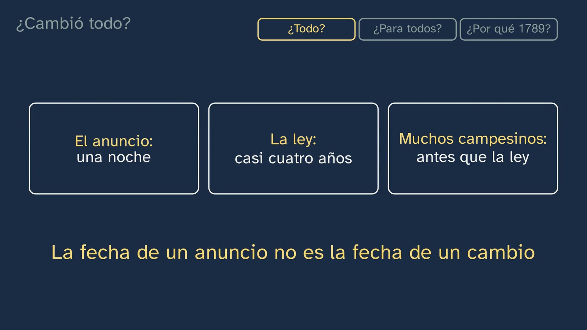
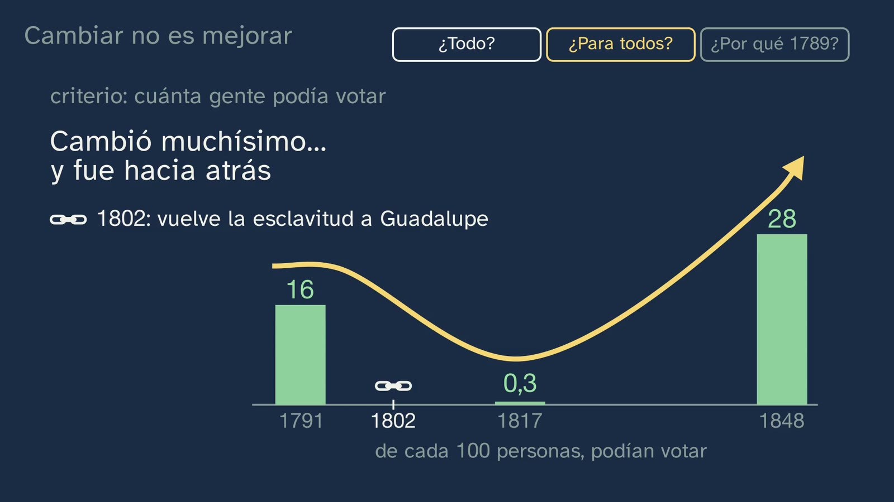

1789: ¿cambió todo para todos?
En pocas palabras
Dos herramientas más del oficio: ver qué cambia y qué sigue igual, y decidir qué hechos importan. El caso es la fecha con la que empiezan los libros: 1789. En agosto, en Versalles, una asamblea escribe «los hombres nacen y permanecen libres e iguales en derechos»; las francesas esperarán 155 años a que una ley les reconozca el voto. ¿Cambió todo, y para todos?
La clase pone la fecha a prueba con documentos. ¿Todo? El decreto de agosto «destruye enteramente el régimen feudal», pero en el mismo artículo declara «rescatables» los demás derechos, que «se seguirán cobrando»; la ley de mayo de 1790 pone el precio (veinte o veinticinco veces lo que se pagaba al año); muchos campesinos dejan de pagar, y la ley no los suprime sin indemnización hasta julio de 1793. El anuncio, la ley y la gente: cada cosa a su ritmo. Arriba, los regímenes cambian una y otra vez; abajo, la Francia que vive en el campo casi no se mueve (Braudel, de la clase 3). ¿Para todos? La Declaración dice «todos los ciudadanos», pero Sieyès separa activos y pasivos; el voto, contado de cada cien personas, va de 16 (1791) a 0,3 (1817) y a 28 (1848), y las mujeres no lo tienen hasta 1944; la esclavitud, abolida en 1794, vuelve en Guadalupe en 1802. Con eso cae el error típico, cambiar es mejorar, con el texto de Condorcet delante y el hecho separado del juicio. ¿Por qué 1789? Cuatro preguntas para argumentar la relevancia (Seixas y Morton, a partir de Partington), lo que no duró (la hora decimal, el calendario) y lo que sí (el metro; la frase de 1789, en 1948 y en 1978), las edades como convención (1789 aquí, 1945 en inglés) y la relevancia que cambia con nuestras preguntas. La respuesta: ni todo, ni para todos, ni de golpe; pero cambió tanto, para tanta gente y durante tanto tiempo, que muchos historiadores empiezan ahí una edad nueva.
Objetivo. Al terminar, el alumnado sabrá reconocer lo que cambia y lo que permanece en un proceso histórico, y a qué ritmo; distinguir cambio de progreso; y argumentar con criterios por qué un hecho es relevante, y por qué los libros abren con 1789 la Edad Contemporánea.
Una nota sobre la respuesta. La clase no decide si 1789 «merece» abrir la Edad Contemporánea: da los criterios para argumentarlo y enseña que la frontera la ponen los historiadores. El ejercicio 3 y la pregunta abierta dejan el juicio al alumnado.
Currículo
Real Decreto 243/2022, Historia del Mundo Contemporáneo, materia de modalidad de 1.º de Bachillerato en Humanidades y Ciencias Sociales (texto consolidado del BOE, comprobado el 21/10/2026; última actualización, 02/07/2026). La descripción de la competencia 1 pide entender «la relación entre los factores más lentos y estructurales y las coyunturas de cambio» y adoptar «una perspectiva no estrictamente lineal del transcurso de la historia, identificando los avances y retrocesos»; la de la competencia 8 recuerda que «la historia que se escribe presta mayor atención a los hechos y personajes excepcionales e individuales que protagonizan los grandes cambios que a las permanencias y a los sujetos anónimos, que suelen pasar desapercibidos». Es justo lo que hace esta clase.
| Elemento | Qué dice el decreto | Dónde se trabaja |
|---|---|---|
| Saber básico (bloque A, «Sociedades en el tiempo») | «El trabajo del historiador: fuentes históricas, historiografía y narrativas del pasado. Argumentación histórica. Relevancia, causas y consecuencias, cambio y continuidad. […]» | Toda la clase: cambio y continuidad, con sus ritmos; cambio frente a progreso; relevancia con criterios; las edades como interpretación |
| Saberes básicos (bloque A) | «La lucha por la libertad, cambio y revolución en la época contemporánea: de las revoluciones burguesas a las revoluciones socialistas. […]» · «El significado histórico y político de los nacionalismos en el mundo contemporáneo: de la servidumbre a la ciudadanía. Abolicionismo […]» | 1789 como caso: el decreto de agosto, la Declaración, quién podía votar y la esclavitud (1794, 1802, 1848) |
| Competencias específicas 1 y 8 | «Reconocer los movimientos, acciones y transformaciones históricas que han contribuido al afianzamiento de la libertad […]» · «Describir y analizar los cambios y permanencias que se han producido en la sociedad contemporánea […] prestando especial interés a la situación de la mujer […]» | Los conceptos de cambio, ritmo, progreso, relevancia y periodización; los regímenes frente a la vida en el campo; el voto de las mujeres |
| Criterio 1.2 | «Comprender los conceptos de revolución y cambio en el mundo contemporáneo y los elementos y factores que los causan y condicionan […]» | Qué cambió en 1789, qué no, y a qué ritmo |
| Criterio 8.1 | «Analizar los cambios y permanencias en la historia, atendiendo a procesos de más larga duración, como los comportamientos demográficos, ciclos vitales y modos de vida […]» | El tiempo lento (el campo, de unos 80 a unos 76 de cada 100 en casi sesenta años); los «pasivos» de Sieyès |
| Criterio 8.2 (entero) | «Contrastar el papel relegado de la mujer en la historia contemporánea, identificando y valorando la importancia de las figuras individuales y colectivas como protagonistas anónimas de la historia contemporánea, así como el papel de los movimientos feministas en el reconocimiento de sus derechos y en el logro de la igualdad efectiva de mujeres y hombres, así como la corresponsabilidad en el cuidado de las personas.» | El papel relegado: Sieyès, 1791, 1848 y la ordenanza de 1944. Una figura: Hansa Mehta. Lo colectivo, sólo como pista: la comisión de la ONU sobre la mujer en 1948 («Para el profesorado»); la clase 6 vuelve con Olympe de Gouges. Los cuidados no se trabajan aquí |
Lo que hay que traer. Las cuatro preguntas de una fuente (clase 1), que hoy se le hacen a la Declaración, y Braudel y su tiempo lento (clase 3). De la ESO (Real Decreto 217/2022, Geografía e Historia, cursos 3.º y 4.º): «Tiempo histórico: construcción e interpretación de líneas de tiempo a través de la linealidad, cronología, simultaneidad y duración» y «La transformación política de los seres humanos: de la servidumbre a la ciudadanía. Transiciones, revoluciones y resistencias: permanencias y cambios en la época contemporánea». La clase da en un minuto lo imprescindible: los estamentos, los privilegios y el verano de 1789.
Dónde vuelve. En el plan actual, el tema 2 («El fin del Antiguo Régimen: las revoluciones liberales») tiene el Antiguo Régimen por dentro, las causas de 1789, el comentario entero de la Declaración y el voto censitario. Aquí 1789 es un caso para aprender a mirar el cambio y la relevancia; allí, el contenido. La clase 5 sigue con dos historiadores que discrepan, y la clase 6, con Olympe de Gouges y la pregunta de si se puede juzgar el pasado.
Cómo está construida la clase
Capítulos del vídeo
En nueve capítulos, 17:48. La pregunta del título se parte en tres casillas (¿Todo?, ¿Para todos?, ¿Por qué 1789?) que se encienden al llegar a cada parte y al final se llenan con su respuesta, para que el hilo no se pierda.
| Capítulo | Qué pasa | Por qué así |
|---|---|---|
| Qué vamos a ver | Tristán, a su mesa; el mapa del tema; 1789, Versalles y el artículo 1 de la Declaración, tecleado. El gancho: «las francesas esperaron ciento cincuenta y cinco años a que una ley les reconociera el voto. ¿Cambió todo, y para todos?» | La pregunta sale del choque entre la frase famosa y un dato |
| Lo que ya sabes | Las cuatro preguntas de la clase 1, que hoy se usan; las soluciones de la clase 3, cada una con su enunciado | Recuperar lo que hará falta; cerrar la práctica espaciada |
| 1789, en un minuto | 560 puntos de 50 000 personas cada uno: los privilegiados, uno y medio de cada cien (Piketty); Sieyès y su folleto; el verano, fecha a fecha | Lo imprescindible, sin robar al tema 2; personas, no porcentajes |
| ¿Cambió todo? | El campesino que paga a tres; el decreto de agosto; la apuesta; el artículo leído entero, con marcatextos; el cartel del rescate (1790); 1793; tres ritmos en tres cajas | El documento antes que la conclusión. La apuesta compromete al alumno con una hipótesis (White y Gunstone, 1992), como en la clase 3, y la propia fuente la resuelve |
| Tiempo rápido, tiempo lento | Arriba, los regímenes que saltan; abajo, cien puntos que casi no se mueven (de unos 80 a unos 76 en el campo). Braudel | Dos tiempos a la vez, en la misma pantalla. «El cambio es un proceso, con ritmos y pautas distintos» (Seixas y Morton, 2013) |
| ¿Para todos? | Los artículos 1 y 6 de la Declaración; el para y piensa; el borrador de Sieyès; el voto de cada cien (16, «?», 0,3, 28); la ordenanza de 1944; la esclavitud, de 1794 a 1848, con Haití | Contar de cada cien y ver los grupos uno a uno es lo que no hace ningún vídeo general (revisión de referentes de esta clase) |
| Cambiar no es mejorar | Condorcet, escondido, escribe que la marcha del progreso «nunca será retrógrada»; la flecha del progreso se dobla sobre el voto; hecho y juicio | El error, con su texto, desmontado con lo que el alumno acaba de ver |
| ¿Por qué 1789? | Las cuatro preguntas de la relevancia, aplicadas a 1789; lo que no duró (la hora decimal, el calendario) y lo que sí (el metro, la frase en 1948 y en 1978, Hansa Mehta); las edades; la relevancia que cambia; la respuesta al título | Una sola fecha pasa por todos los criterios. Las edades, como herramienta y no como hecho |
| Para practicar y seguir pensando | Resumen en tres tarjetas, tres ejercicios que mezclan esta clase con las anteriores y la pregunta abierta | La pregunta abierta, sin veredicto |

Plan de una sesión de 50 minutos
| Minutos | Qué se hace |
|---|---|
| 0–4 | Sin vídeo, la apuesta de la hoja por escrito: un campesino, en 1790, ¿deja de pagar a su señor? Cada cual elige una de las tres opciones y escribe por qué. |
| 4–13 | Vídeo hasta la apuesta de «¿Cambió todo?» (5:11): en parejas, comparar con lo que escribieron. Seguir hasta el final del capítulo (6:42). |
| 13–23 | «Tiempo rápido, tiempo lento» y «¿Para todos?» hasta la pausa del artículo 6 (8:41): cada pareja escribe quiénes eran «todos los ciudadanos». Seguir hasta el final de «¿Para todos?» (11:15) y rellenar la tabla del voto de la hoja. |
| 23–30 | «Cambiar no es mejorar» y «¿Por qué 1789?» (hasta el 15:55). Tras «hecho y juicio», parar y hacer la pregunta 3 de la tabla del voto: el mismo dato, con otro criterio. |
| 30–46 | La actividad: «Lo que pedían dos pueblos» (abajo). |
| 46–50 | Vídeo hasta el final. Los ejercicios, para casa. |
Errores típicos y cómo se tratan
| Error | Qué dice la investigación | Cómo lo trata la clase |
|---|---|---|
| «Cambiar es mejorar»: la historia siempre va hacia delante | «Hay algunos indicios en la investigación de que los alumnos tienden a pensar que la dirección del cambio implica automáticamente progreso»; esa idea puede llevar a «una actitud condescendiente hacia el pasado», que se ve como pura carencia (Lee, 2005, pp. 44–45). Seixas y Morton: progreso y decadencia son «valoraciones generales del cambio», y «el progreso de un pueblo puede ser la decadencia de otro» (2013, p. 10) | Condorcet, con su texto, frente al voto (de 16 de cada 100 a 3 de cada 1000) y la esclavitud que vuelve en Guadalupe; la flecha del progreso se dobla. Y el hecho, separado del juicio: «retroceso» es un juicio con un criterio |
| «Un hecho lo cambió todo de golpe» («el 4 de agosto se abolió el feudalismo») | «Si los alumnos ven los cambios como acontecimientos», no les cabe la idea de cambios graduales y no buscados, y el cambio se ve como algo «episódico» e «intencional» (Lee, 2005, p. 44). La frase la repiten los vídeos más vistos: Crash Course #29 (3:10–3:25), y The Rest Is History la lleva en el título | El artículo 1 del decreto, leído entero: «destruye enteramente» y, en el mismo artículo, «rescatables» y «se seguirán cobrando». Tres ritmos en tres cajas: el anuncio, la ley y la gente |
| «La Declaración era para todos» | Lo dicen los vídeos más vistos: «applied to every person» (Crash Course #29, 3:25–3:36, más de 10 millones de vistas); «derechos para todos» (Infonimados, 6:33) | La cuarta pregunta de una fuente, con un giro: ¿para quién valía? Los «pasivos» de Sieyès, el voto de cada cien y cada grupo en su fecha |
| «Las edades están en el pasado»: la Edad Contemporánea empieza en 1789 porque sí | La periodización «es un proceso de interpretación» (Seixas y Morton, 2013, p. 10). Muchos vídeos la presentan como natural (unProfesor, Happy Learning, Memorias de Pez) | Dos cintas: 1789 en España y en Francia, 1945 en inglés. «Las edades no están en el pasado: son una herramienta para ordenarlo» |
| «Es importante porque sale en el libro» (o «porque me interesa») | El Historical Thinking Project llama a las dos frases «explicaciones insuficientes» de la relevancia. Y es lo que menos se trabaja: en los manuales españoles de 1.º de Bachillerato analizados (tres editoriales, junto con tres británicas), la relevancia es la competencia menos trabajada, en el 8,7 % de las actividades (Campillo-Ferrer, Sánchez-Ibáñez y Castro-Fernández, 2025) | Cuatro preguntas para argumentarla, aplicadas a una sola fecha; y la relevancia que cambia con nuestras preguntas (los campesinos, las mujeres, las personas esclavizadas) |
Preguntas y soluciones
Para y piensa (dentro del vídeo)
- Antes de fiarte de una fuente, le haces cuatro preguntas. ¿Cuáles son? (0:51) Quién la hizo, cuándo y dónde, para qué y para quién (clase 1). Hoy vuelven con la Declaración, y la cuarta, con un giro.
- La apuesta: un campesino, en 1790, ¿deja de pagar a su señor? (4:54) Por ley, la 2. En agosto de 1789 cayó sin indemnización lo ligado a la mano muerta y a la servidumbre personal, y en marzo de 1790, las banalidades (el molino y el horno obligatorios) y las prestaciones personales de trabajo. Pero lo que se pagaba por la tierra (el censo, el champart, los derechos sobre las ventas) era «rescatable» y se siguió cobrando hasta el 17 de julio de 1793. En la práctica, muchos dejaron de pagar antes: «dès le premier moment de la révolution, le paysan était décidé à ne plus payer» («desde el primer momento de la revolución, el campesino estaba decidido a no pagar más»; Lefebvre, 1929, p. 140). La 1 es lo que hicieron muchos, no lo que decía la ley. La 3 no tiene pruebas generales, aunque quien rescataba pagaba de golpe y con los atrasos.
- ¿Para quién valía? ¿Quiénes eran todos los ciudadanos? (8:34) La Declaración no lo dice. La pista es el borrador de Sieyès: «pasivos», protegidos pero sin voto (las mujeres, «al menos en el estado actual», los niños, los extranjeros y quienes no contribuyeran a sostener el Estado), y «activos», que eligen. La regla llegó con la Constitución de 1791: hombres de 25 años o más que pagaran una contribución de tres jornadas de trabajo, no fueran criados y hubieran jurado; unos 16 de cada 100 habitantes. A las mujeres no las nombra al dar el voto: se daba por hecho que no votaban.

De la hoja del alumnado
- Mientras ves el vídeo. 1) Que lo ligado a la mano muerta y a la servidumbre personal queda abolido sin indemnización; todo lo demás es «rachetable» (hay que comprarlo) y, mientras tanto, «se seguirá cobrando». 2) Veinte veces lo que se pagaba cada año; veinticinco si era en especie (cartas patentes del 9-5-1790, art. XXI). Sin indemnización, el 17-7-1793. 3) El anuncio, en una noche (4-8-1789); la ley, casi cuatro años (1443 días); muchos campesinos, antes que la ley. 4) Deprisa, el régimen; despacio, dónde vive la gente: en el campo, unos 80 de cada 100 hacia 1789 (estimación) y unos 76 en 1846. 5) Las mujeres, los niños, los extranjeros y quienes no contribuyeran a sostener el Estado; era un borrador, no un texto aprobado. 6) Cuánto cambió la vida de la gente; a cuánta gente; durante cuánto tiempo; qué nos revela, del pasado o de hoy.
- El voto, de cada cien. 1) 16; «?» (nadie hizo la cuenta: «aucun document ne fixe le total des électeurs inscrits», Meuriot, 1916, p. 159); 0,3; 28. 2) Hacia atrás: de 16 de cada 100 a 3 de cada 1000. 3) Hacia delante: de menos de 2 de cada 1000 a unas 3 de cada 1000, casi el doble (Meuriot, pp. 158 y 221–233; calculado). Los mismos hechos dan «retroceso» o «avance» según el criterio: se valora que el alumno diga cuál usa, no que declare uno «el verdadero».
- ¿Deprisa, despacio o casi nada? 1) D (en el papel). 2) L: se siguió cobrando hasta 1793, aunque muchos dejaron de pagar antes. 3) D: el tiempo rápido. 4) P: de unos 80 a unos 76 de cada 100 en 57 años; «casi nada» no es «nada». 5) A, con el criterio «quién es libre»: abolida en 1794 y restablecida por la fuerza en 1802. 6) L: ley de 1795, única medida permitida desde el 1-1-1840. La pregunta final es abierta: se valora que use un criterio (por ejemplo, «a cuántos»: lo que se pagaba por la tierra tocaba a la mayoría).
Para practicar (las soluciones abren la clase 5)
- Una fuente oral: un día de una persona mayor de la familia cuando tenía tu edad. Abierta. Criterios: tres cambios y tres continuidades, cada uno con su porqué; si algo ha ido «a peor», con su criterio y para quién; y alguna señal de ritmo (qué cambió de golpe y qué poco a poco). Es una fuente, y se interroga: la memoria reconstruye. Con permiso, y sin publicar nada privado.
- España: el primer voto de las mujeres en unas generales (1933) y los años sin elecciones generales libres, entre las de febrero de 1936 y las de junio de 1977. La línea del tiempo, dónde fue hacia atrás y con qué criterio. Hecho, criterio y juicio, por separado.
- Los hechos, sin adjetivos. 19-11-1933: primeras elecciones generales en que votan las mujeres (Constitución de 1931, art. 36: «los ciudadanos de uno y de otro sexo, mayores de veintitrés años»). 16-2-1936: últimas elecciones generales antes de la guerra. Entre ellas y las de junio de 1977 no hay elecciones generales libres: los partidos, disueltos (decreto del 19-4-1937); referendos en 1947 y 1966 (hombres y mujeres de 21 años o más) y, desde 1967, el «tercio familiar» (cabezas de familia y mujeres casadas), sin partidos. 15-6-1977: elecciones generales libres, con voto de hombres y mujeres mayores de edad (entonces, 21 años).
- Un criterio, dicho: por ejemplo, «cuánta gente puede elegir libremente a sus diputados». Con él, la línea cae a cero tras febrero de 1936, para ellas y para ellos, y vuelve en 1977. El juicio: llamarlo «retroceso» es un juicio con ese criterio; con otro («quién vota en alguna votación»), los referendos incluían a hombres y mujeres. Por eso la palabra exacta es «libres».
- Lo que no vale: «no se votó nunca»; «Franco quitó el voto a las mujeres» como frase suelta (desaparecieron las elecciones libres, para todos); y «las de 1936 fueron las últimas elecciones libres» como afirmación cerrada, porque tienen su propio debate entre historiadores: lo seguro es que entre ellas y las de 1977 no las hubo. Si alguien va más atrás, la línea también va y viene: 1868, los hombres de 25 años o más; 1878, sólo los que pagaban una cuota; 1890, otra vez todos los hombres; 1923–1930, sin elecciones generales.
- Las cuatro preguntas de la relevancia, a la apertura del Muro. ¿Tan relevante como 1789? Abierta. Cuánto cambió: para los alemanes del Este, mucho y deprisa (elecciones libres el 18-3-1990 y un solo país el 3-10-1990, clase 3). A cuántos: a los dos Estados alemanes enseguida; más allá, depende de cómo se relacione con el fin de los regímenes del Este y de la URSS (tema 16), y eso es una interpretación. Cuánto tiempo: Alemania sigue unida desde 1990. Qué nos revela: una lectura posible, que un régimen puede caer sin guerra, o que el azar decide a veces el cuándo y el cómo (clase 3). La comparación no tiene respuesta de libro: se valora que use los mismos criterios para los dos y diga desde dónde mira, porque la relevancia «varía con el tiempo y de un grupo a otro» (Seixas y Morton, 2013). Para el debate: la misma madrugada, ABC escribió que «con este hecho histórico comienza un período fundamental, a juicio de los observadores internacionales, dentro de la historia contemporánea» (10-11-1989, p. 1). Los contemporáneos también deciden qué es «histórico»; luego los historiadores lo revisan.
Para seguir pensando. Dentro de cien años, un historiador escribe sobre nuestra época. De todo lo que has vivido, ¿qué hecho elegiría, y con qué criterio? No tiene respuesta de libro. Pistas, sin cerrarlo: la pregunta de «cuánto tiempo» aún no se puede contestar, y por eso los historiadores necesitan distancia; Partington añadía un criterio que la clase no usa, la importancia que le dio la gente de la época, que sobre la nuestra sí podemos responder (según lo recogen Hunt, 2000, y Phillips, 2002); la relevancia «se construye» y «varía» (Seixas y Morton, 2013). Si alguien elige un hecho personal, vale preguntarle a cuántos afectó: se discute el criterio, no la intimidad. El profesor modera y no da su veredicto.
Una actividad para el aula: lo que pedían dos pueblos
Duración: 16 minutos. Material: dos cuadernos de quejas de abril de 1789 y las leyes que les respondieron, abiertos en Persée y en Internet Archive; abajo, los fragmentos con su traducción, para imprimir. El francés de la edición de 1879, con la ortografía puesta al día, se lee bien con el glosario.
Los documentos
- A. Gres-en-Brie («paroisse de Grés en Brie, bailliage de Paris»), cuaderno aprobado en la asamblea de los habitantes el 13 de abril de 1789. Archives parlementaires, 1.ª serie, t. IV (1879), pp. 592–594: https://www.persee.fr/doc/arcpa_0000-0000_1879_num_4_1_2205
- «Il est de la dernière importance que les droits de champart, dans les lieux où ils sont étendus, soient totalement abolis» («Es de la mayor importancia que los derechos de champart, allí donde se extienden, queden totalmente abolidos»).
- «La dîme […] se perçoit partout inégalement […]. Elle devrait être perçue uniformément, et à raison de quatre gerbes par arpent» («El diezmo […] se cobra en todas partes de forma desigual […]. Debería cobrarse de manera uniforme, a razón de cuatro gavillas por arpent»).
- «le lapin et les bêtes de grande chasse ravageaient nos récoltes» («el conejo y los animales de caza mayor arrasaban nuestras cosechas»).
- A la nobleza y al clero: «répartir sur vous comme sur nous l'impôt en parfaite égalité, et chacun en proportion de ses possessions» («repartir el impuesto sobre vosotros como sobre nosotros, con perfecta igualdad, y cada uno en proporción a lo que posee»).
- B. Sceaux-Penthièvre, «près Paris», asamblea general de la parroquia del 12 de abril de 1789, domingo de Pascua. Archives parlementaires, 1.ª serie, t. V (1879), pp. 115–116: https://www.persee.fr/doc/arcpa_0000-0000_1879_num_5_1_2410
- Art. 5: «Que la suppression de tous les privilèges soit opérée» («Que se suprima todo privilegio»).
- Arts. 8, 11 y 12: que se supriman los cotos de caza («capitaineries») y el derecho de palomar, y que se destruyan los conejos.
- Art. 9: «Qu'il soit permis de faire le rachat des dîmes en un abonnement en argent» («Que se permita rescatar los diezmos con una cuota fija en dinero»).
- Art. 10: «Qu'il en soit de même pour le rachat des champarts et surcens seigneuriaux, et pour le rachat de toutes rentes seigneuriales» («Que se haga lo mismo con el rescate de los champarts y sobrecensos señoriales, y con el de todas las rentas señoriales»).
- Art. 18: «Que toutes les mesures soient réduites à une seule» («Que todas las medidas se reduzcan a una sola»).
- Al pie, lo firman los habitantes «qui le savent, et les autres ont déclaré ne le savoir» («que saben [firmar]; los demás declararon no saber»).
- C. La ley. El decreto de agosto de 1789, arts. 1, 2, 3, 5, 6 y 9 (Archives parlementaires, t. VIII, pp. 397–398: https://www.persee.fr/doc/arcpa_0000-0000_1875_num_8_1_4833_t2_0397_0000_3); el cartel del 9 de mayo de 1790, art. XXI, con el precio del rescate (https://archive.org/details/case_oversize_frc_10460_no_03); la ley de abril de 1790, que deja de cobrar los diezmos desde el 1 de enero de 1791; el decreto del 17 de julio de 1793, art. 1 (Archives parlementaires, t. LXIX, p. 98: https://archive.org/details/archivesparlemen69pariuoft); y el metro, ley de 1795, obligatorio desde 1840.
Glosario: champart, la parte de la cosecha que se llevaba el señor; dîme, diezmo; capitaineries y remises, cotos y refugios de caza; rachat, rescate (pagar para librarse de una carga); surcens, sobrecenso; arpent, medida de superficie que cada lugar medía a su modo.
Pasos
- (2 min) Grupos de tres; la mitad recibe Gres-en-Brie, y la otra mitad, Sceaux-Penthièvre. Las cuatro preguntas al cuaderno: ¿quién lo hizo?, ¿cuándo y dónde?, ¿para qué?, ¿para quién? ¿Quién firma? ¿Quién no aparece?
- (7 min) Con los documentos C, una tabla: queja · qué pedía el pueblo · qué dijo la ley, y cuándo · ¿de golpe, despacio o nada? · ¿más, igual o menos de lo pedido?
- (4 min) Puesta en común: el champart de los dos pueblos, uno junto al otro. Gres pidió abolirlo; Sceaux, poder rescatarlo. ¿A quién dio la razón la ley de 1789–1790? ¿Y la de 1793? ¿Qué dice eso de «los campesinos» como si fueran un bloque?
- (3 min) Relevancia con criterio: ¿qué cambio fue el más relevante para estos vecinos? Cada grupo elige uno y lo defiende con una de las cuatro preguntas; en la pizarra, el criterio de cada grupo.
Soluciones
| Queja | Gres-en-Brie | Sceaux-Penthièvre | Lo que dijo la ley | Ritmo | ¿Respecto a lo pedido? |
|---|---|---|---|---|---|
| Champart | Abolirlo «totalmente» (o, «al menos», moderarlo igual en todas las provincias) | Poder rescatarlo (art. 10) | 1789: rescatable (art. 6) y se sigue cobrando (art. 1); precio y modo, en 1790; suprimido sin indemnización el 17-7-1793 (salvo las rentas «puramente territoriales y no feudales», art. 2) | Despacio: casi cuatro años | Sceaux, lo pedido, en 1789–1790; Gres, en 1793 |
| Diezmo | Cobrarlo igual en todas partes, o pagar a los curas de otro modo | Rescatarlo con una cuota en dinero (art. 9) | Abolido en agosto de 1789 (art. 5), sin rescate, pero cobrado hasta el 31-12-1790 | Anuncio de golpe; fin, casi año y medio después | Más de lo pedido, pero no de golpe |
| Caza | Los conejos y la caza mayor arrasan las cosechas | Suprimir los cotos (art. 8) y destruir los conejos (art. 11) | Art. 3: abolidos el derecho exclusivo de caza y los cotos, «incluso los reales»; «todo propietario» puede destruir la caza «sólo en sus posesiones» | De golpe, en el papel | Lo pedido. Pero ¿para todos? El derecho es del propietario, en sus tierras |
| Palomares | — | Suprimir el derecho de palomar (art. 12) | Art. 2: «Queda abolido el derecho exclusivo» de palomares; las palomas, encerradas cuando lo fije la comunidad | De golpe, en el papel | Lo pedido |
| Privilegios e impuesto igual | El impuesto, a todos, «con perfecta igualdad» | Suprimir todo privilegio (art. 5) | Art. 9: privilegios fiscales abolidos «para siempre»; se cobrará a todos los ciudadanos y bienes «de la misma manera» | De golpe, en el papel | Lo pedido |
| Una sola medida | — | «todas las medidas […] a una sola» (art. 18) | Ley de 1795 (el metro); única medida permitida desde el 1-1-1840 (ley del 4-7-1837) | Muy despacio: casi 51 años desde el cuaderno | Lo pedido, medio siglo después |
Cierre. Los cuadernos no hablan por «los campesinos»: dos parroquias de los alrededores de París pidieron cosas distintas para la misma carga. La ley respondió a ritmos distintos: la caza y los palomares, de golpe y en el papel; el diezmo, en año y medio; el champart, en cuatro años; una sola medida, en medio siglo. Y no siempre para todos: el derecho a cazar en sus tierras era del propietario. Para contextualizar: en 748 cuadernos de parroquia, ocho de las diez quejas más frecuentes eran sobre los impuestos del Estado: «d'abord les impôts, encore les impôts, toujours les impôts» (Markoff, 1991, p. 59).
Hazlo tú: la colección de los Archives parlementaires en Persée tiene, en sus primeros tomos, los cuadernos de quejas de 1789 de muchas parroquias, con búsqueda por texto. Buscar «cahier» y el nombre de un pueblo, y repetir la tabla. Variante con el cartel: proyectar el cartel de 1790 (Newberry Library) y buscar con zoom el artículo XXI: ¿cuánto costaría librarse de una renta de 10 libras al año? (200 libras de golpe, más los atrasos; si se pagaba en grano, veinticinco veces lo de un año.)
Recursos abiertos
Comprobados el 21/10/2026, gratuitos y sin registro.
| Recurso | Qué ofrece | Enlace |
|---|---|---|
| Persée, Archives parlementaires (Biblioteca de la Sorbona) | Los cuadernos de quejas de 1789, los decretos y los debates de la Asamblea, con búsqueda por texto, en francés | https://www.persee.fr/collection/arcpa |
| Internet Archive, Newberry Library French Pamphlets | Más de 38 000 impresos franceses, sobre todo de 1780 a 1810; entre ellos, el cartel del rescate de 1790 | https://archive.org/details/newberryfrenchpamphlets |
| Conseil constitutionnel | La Declaración de 1789, en francés y en su traducción oficial al español; las Constituciones de Francia | https://www.conseil-constitutionnel.fr/es/declaracion-de-los-derechos-del-hombre-y-del-ciudadano-de-1789 |
| Digithèque MJP (Universidad de Perpiñán) | Las constituciones y leyes de Francia: 1791, la ordenanza de 1944, los decretos de 1794 y 1848 y la ley de 1802 sobre la esclavitud | https://mjp.univ-perp.fr/france/ |
| Assemblée nationale, «Le suffrage universel» | La historia del voto en Francia y de la conquista del voto de las mujeres, con su cronología, en francés | https://www2.assemblee-nationale.fr/decouvrir-l-assemblee/histoire/le-suffrage-universel |
| Fondation pour la mémoire de l'esclavage | 1791, 1794, 1802 y 1848, con documentos, en francés | https://memoire-esclavage.org/ |
| Wikisource en francés | Sieyès, Qu'est-ce que le tiers état ? (ed. de 1888); la Esquisse de Condorcet en facsímil (1795); Tocqueville | https://fr.wikisource.org/wiki/Qu%E2%80%99est-ce_que_le_tiers_%C3%A9tat_%3F_(Champion,1888)/Qu%E2%80%99est-ce_que_le_tiers%C3%A9tat_%3F |
| Liberty, Equality, Fraternity (George Mason University y CUNY) | 350 textos, 250 imágenes, 13 canciones y 13 mapas de la Revolución, en inglés | https://revolution.chnm.org/ |
| Historical Thinking Project | Relevancia, y cambio y continuidad, con sus criterios, en inglés | https://historicalthinking.ca/historical-significance |
| Naciones Unidas | La Declaración Universal en español; las actas de su redacción (por ejemplo, E/CN.4/SR.34, con Hansa Mehta) y las mujeres que la escribieron | https://www.un.org/es/about-us/universal-declaration-of-human-rights |
| Congreso de los Diputados | «Elecciones 19 noviembre 1933» y «La diputada Campoamor y los derechos civiles y políticos de las mujeres», para el ejercicio 2 | https://www.congreso.es/es/cem/iirep-nov-1933 |
| BOE, Gazeta (colección histórica) | Las disposiciones de los diarios oficiales de 1661 a 1959: la Constitución de 1931, la ley del metro de 1849 | https://www.boe.es/buscar/gazeta.php |
Para el profesorado: lo que no cabe en el vídeo
- El mismo Condorcet defendió el voto de las mujeres. En 1790: «Ou aucun individu de l'espèce humaine n'a de véritables droits, ou tous ont les mêmes ; et celui qui vote contre le droit d'un autre, quels que soient sa religion, sa couleur ou son sexe, a dès lors abjuré les siens» («O ningún individuo de la especie humana tiene verdaderos derechos, o todos tienen los mismos; y el que vota contra el derecho de otro, cualesquiera que sean su religión, su color o su sexo, ha abjurado desde ese momento de los suyos»; Journal de la Société de 1789, n.º V, 3-7-1790; Œuvres, t. X, 1847, p. 122). Al final proponía empezar por las propietarias. Sirve para no convertirlo en un hombre de paja. Y su «jamais rétrograde» habla del futuro, el de una perfectibilidad «désormais indépendante de toute puissance qui voudroit les arrêter» («en adelante independiente de cualquier poder que quisiera detener [sus progresos]»; Esquisse, 1795, p. 4): las décadas que siguieron son una prueba justa de su predicción.
- El giro del criterio. En 1791, los 16 de cada 100 sólo votaban en primer grado: elegían a unos 43 800 electores, menos de 2 de cada 1000, que elegían a los diputados; en 1817, unos 102 000, más de 3 de cada 1000, los elegían directamente (Meuriot, 1916, pp. 158 y 221–233; calculado). Con el criterio «quién elegía a los diputados», el cambio fue hacia arriba: es la mejor prueba de «¿con qué criterio?», y está en la hoja. Y otro matiz: en 1791 había unos 4,3 millones de ciudadanos activos frente a 2,7 millones de pasivos, y la Asamblea Nacional francesa advierte: «Il est faux d'affirmer que "seuls les riches pouvaient voter"» («Es falso afirmar que "sólo los ricos podían votar"»).
- Tocqueville, el clásico de la continuidad. En 1856 escribió que los franceses hicieron en 1789 el mayor esfuerzo «afin de couper pour ainsi dire en deux leur destinée» («para cortar, por así decirlo, en dos su destino»), pero que, «à leur insu» («sin saberlo»), conservaron del Antiguo Régimen la mayor parte de sus sentimientos, costumbres e ideas (L'Ancien Régime et la Révolution, prólogo; 7.ª ed., 1866, pp. i–ii). El título de su libro II, cap. 2, lo resume: la centralización administrativa es «une institution de l'ancien régime, et non pas l'œuvre de la révolution et de l'empire, comme on le dit» («una institución del Antiguo Régimen, y no obra de la Revolución y del Imperio, como se dice»). Un buen texto para comentar al acabar.
- Hansa Mehta, con detalle. El 12-12-1947, en Ginebra, pidió cambiar «all men», que podía entenderse como si excluyera a las mujeres, por «human beings» o «persons»; Eleanor Roosevelt, que presidía, respondió que «men» ya incluía a todos, y se aprobó una nota con esa lectura (E/CN.4/SR.34, pp. 4–6). En 1948, la Comisión de la Condición Jurídica y Social de la Mujer propuso «All people» (E/CN.4/81); la India y el Reino Unido, «All people, men and women» (E/CN.4/99); y el belga Lebeau, como compromiso, «all human beings», con el apoyo de esa comisión (E/CN.4/SR.50, pp. 9–15). La ONU dice que Mehta «es ampliamente reconocida» por el cambio, y destaca también a Bodil Begtrup (Dinamarca) y a Minerva Bernardino (República Dominicana): es la parte colectiva del criterio 8.2. Por eso la clase dice que Mehta fue la primera en pedirlo, no que lo hiciera sola.
- Lo que pagaba de verdad un campesino. No hay una cifra total seria, y no conviene darla. Lo del señor cambiaba muchísimo de una región a otra: en el Mediodía y al sur de París, «3 o 4 centésimos del producto bruto»; en Bretaña o Borgoña, mucho más (Goubert, p. 149). El diezmo casi nunca era la décima parte: lo normal, una gavilla de cada doce o trece (Marion, 1923, p. 174). En Chalifert-en-Brie, en 1789, se pagaba «à la onzième gerbe» («a la undécima gavilla») y, del vino, «la vingt et unième pièce» («la vigésima primera barrica») (Archives parlementaires, t. IV, p. 392).
- Del decreto de 1789 al de 1793. El rey no firmó los decretos de agosto: sólo mandó publicarlos (20 de septiembre), y se promulgaron el 3 de noviembre. En marzo de 1790 cayeron sin indemnización las banalidades y las prestaciones personales, pero era el campesino quien tenía que probar que una carga no venía de la tierra; en mayo, el rescate se hizo indivisible y con atrasos; en agosto de 1792 se invirtió la prueba; y en julio de 1793 todo cayó sin indemnización, con los títulos a quemar el 10 de agosto. Sobre cuántos rescataron, Lefebvre ya avisó en 1929: «il faut renoncer à dresser une statistique» («hay que renunciar a hacer una estadística», p. 138); los estudios regionales coinciden en que fueron muy pocos.
- ¿Votó alguna mujer en 1789? Unas pocas, por medio de un hombre: el reglamento del 24-1-1789 dejaba que las nobles con feudo y las comunidades de monjas se hicieran representar por un procurador (arts. 11 y 20). La frase segura es otra: los diputados eran todos hombres.
- Hacia atrás, también después de 1848. La ley del 31 de mayo de 1850 exigió tres años de residencia probados con el impuesto, y el cuerpo electoral bajó de unos 10 a unos 7 millones hasta diciembre de 1851 (Archives de Maine-et-Loire; Musée du compagnonnage). Por eso el vídeo no dice «para quedarse».
- La esclavitud, colonia a colonia. La abolición de 1794 no se aplicó en Martinica (ocupada por los británicos), Reunión ni Mauricio, y «libres» quería decir obligados a seguir en la plantación. En 1802, la ley del 20 de mayo la «mantuvo» donde no se había abolido; en Guadalupe la restableció un decreto del 16 de julio, y en la Guayana uno de diciembre, aplicado en 1803; en Saint-Domingue no, y Haití fue independiente el 1-1-1804. El decreto del 27-4-1848 liberó a unas 250 000 personas en las Antillas, Reunión y Senegal. La ceremonia de Bois-Caïman es una tradición discutida, no un hecho probado.
- Las cifras cambian según quién cuente. Sieyès contó «pas deux cent mille privilégiés» («no llegan a doscientos mil privilegiados») entre «vingt-cinq à vingt-six millions d'âmes» («veinticinco o veintiséis millones de almas»; cap. III): menos de 1 de cada 100 (calculado); Piketty, 1,5. Una pregunta para el aula, con las cuatro de la clase 1: ¿para qué podía convenirle a Sieyès contar pocos?
- El tiempo nuevo. Con la regla oficial del calendario, la del equinoccio, el 21 de octubre de 2026 era el 29 de vendimiario del año 235, el día de la cebada. El metro, obligatorio en Francia desde 1840, lo fue en España desde 1860 (ley de 1849), con más de cuarenta años de implantación real (Centro Español de Metrología); y su definición cambió en 1889, 1960 y 1983 (BIPM): dura el nombre, no la definición. Ya lo pedía en abril de 1789 el cuaderno de Sceaux-Penthièvre.
- Las edades. El Diccionario de la RAE no da 1789 («desde fines del siglo XVIII o principios del XIX»); Ribot (2016): en España «se utiliza habitualmente» 1789; la Facultad de Historia de Cambridge: la historia contemporánea «lacks firm boundaries» («no tiene fronteras firmes»: 1918, 1930 o 1945). Y Hobsbawm empieza en 1789 por una «doble revolución», la francesa y la industrial británica (The Age of Revolution, 1962).
Para saber más
- P. Seixas y T. Morton, The Big Six Historical Thinking Concepts (Nelson, 2013), «Historical Significance» y «Continuity and Change»: https://historicalthinking.ca/historical-significance
- A. de Tocqueville, L'Ancien Régime et la Révolution (1856), en Wikisource: https://fr.wikisource.org/wiki/L%E2%80%99Ancien_R%C3%A9gime_et_la_R%C3%A9volution
- E. J. Hobsbawm, La era de la revolución, 1789-1848 (Crítica; original de 1962).
Fuentes
Cada dato, con sus fuentes y sus citas literales, en la verificación de la clase. Las traducciones son nuestras y literales, salvo la oficial de la Declaración. AP = Archives parlementaires, 1.ª serie (en Persée: https://www.persee.fr/collection/arcpa).
- Real Decreto 243/2022, texto consolidado: https://www.boe.es/buscar/act.php?id=BOE-A-2022-5521 · Real Decreto 217/2022 (ESO), Geografía e Historia, 3.º y 4.º
- La Declaración, arts. 1 y 6, y su traducción oficial: Conseil constitutionnel · aprobada el 26-8-1789: AP, t. VIII, p. 489 · en Versalles: Centre de musique baroque de Versailles (Hôtel des Menus-Plaisirs) y Hérodote · el verano de 1789: AP, t. VIII, pp. 1, 127, 233 y 350 · el rey: AP, t. IX, pp. 53 y 348
- El decreto del 11-8-1789, arts. 1–9: AP, t. VIII, pp. 397–398 · decretos del 15-3-1790 (AP, t. XII, pp. 172–176) y del 3-5-1790, arts. 3, 21 y 22 (AP, t. XV, pp. 364–368), y su cartel, las cartas patentes del 9-5-1790, art. XXI (Newberry Library, Case oversize FRC 10460 no. 3) · los diezmos, hasta el 1-1-1791: AP, t. XII, p. 668 · ley del 25-8-1792 (AP, t. XLVIII, pp. 698–699) · decreto del 17-7-1793, arts. 1, 2 y 6 (AP, t. LXIX, p. 98; Duvergier, Collection complète des lois, t. 6, pp. 23–24)
- Los campesinos que dejan de pagar: G. Lefebvre, Annales d'histoire économique et sociale 1 (1929), pp. 138–140 · J.-N. Luc, AHRF 237 (1979), p. 492 · lo que pagaban: M. Marion, Dictionnaire des institutions de la France (1923), pp. 34, 75, 83, 172–174, 397 y 526–530 · P. Goubert, El Antiguo Régimen. 1. La sociedad (Siglo XXI, 1984), pp. 147–149 · J. Markoff, MEFR 103-1 (1991), pp. 59–60
- Los cuadernos de quejas: Gres-en-Brie, AP, t. IV (1879), pp. 592–594 · Sceaux-Penthièvre, AP, t. V (1879), pp. 115–116 · Chalifert-en-Brie, AP, t. IV, p. 392
- Sieyès: Qu'est-ce que le tiers état ?, ed. Champion (1888), arranque y cap. III · Préliminaire de la constitution (20–21 de julio de 1789), AP, t. VIII, p. 259 · T. Piketty, Capital e ideología (2019), tabla 2.1
- El voto: Constitución de 1791, tít. III, cap. I, secc. II, art. 2 · decreto del 11-8-1792, art. 2 (AP, t. XLVIII, pp. 29–30) · P. Meuriot, Journal de la Société de statistique de Paris 57 (1916), pp. 158–159, 221–233, 299 y 324–371: https://www.numdam.org/item/JSFS_1916__57__157_0/ · Assemblée nationale, páginas del sufragio · la ley del 31-5-1850: Archives de Maine-et-Loire y Musée du compagnonnage
- Las mujeres: ordenanza del 21-4-1944, art. 17 (Journal officiel, Argel, 22-4-1944; Digithèque MJP) · primer voto, 29-4-1945: Assemblée nationale · reglamento del 24-1-1789, arts. 11 y 20 (Duvergier, t. 1)
- La esclavitud: decreto del 16 pluvioso del año II (4-2-1794), ley del 30 floreal del año X (20-5-1802) y decreto del 27-4-1848 (Digithèque MJP) · Fondation pour la mémoire de l'esclavage · UNESCO · P. Girard (BnF)
- Condorcet: Esquisse (1795), p. 4 (Wikisource, facsímil) · Robinet, Condorcet (1893), pp. 320–323 · «Sur l'admission des femmes au droit de cité» (1790), Œuvres, t. X (1847), p. 122
- El campo: E. Le Roy Ladurie, Annuaire du Collège de France 1980-1981, pp. 613–614 · T. Loua, Journal de la Société statistique de Paris 21 (1880), pp. 175–176 · Observatoire des territoires (2022) · los regímenes: Conseil constitutionnel · F. Braudel, La Méditerranée (2.ª ed., 1966), t. II, p. 223
- El calendario y la hora decimal: decreto del 4 frimario del año II, arts. VIII y XI · ley del 18 germinal del año III, arts. 1, 5 y 22 (Duvergier, t. VIII, pp. 71–72) · el metro: ley del 4-7-1837, art. 3 (Bigourdan, 1901, p. 223); BIPM; Ley española de 19-7-1849 (Gaceta de Madrid) y Centro Español de Metrología (2024)
- La relevancia: P. Seixas y T. Morton, The Big Six (2013), p. 10, e historicalthinking.ca · G. Partington (1980), pp. 112–116, según M. Hunt (2000), p. 41, y R. Phillips, Teaching History 106 (2002), p. 15 · la periodización: DLE, «edad»; L. Ribot (2016); Larousse; Facultad de Historia de Cambridge; Oxford Reference; E. J. Hobsbawm, The Age of Revolution (1962), prefacio
- La Declaración Universal, art. 1 (ONU) · actas de la Comisión de Derechos Humanos: E/CN.4/SR.34, pp. 4–6; E/CN.4/81, p. 1; E/CN.4/99; E/CN.4/SR.50, pp. 9–15 · ONU, «Women who shaped the Universal Declaration» · Constitución española de 1978, art. 14 (BOE) · A. de Tocqueville, L'Ancien Régime et la Révolution (7.ª ed., 1866), prólogo y libro II, cap. 2
- El voto en España: Constitución de 1931, art. 36 (Gaceta de Madrid, 10-12-1931, p. 1581) · Congreso de los Diputados, «Elecciones 19 noviembre 1933» y «Las Cortes Españolas 1943-1977» · decreto 255, de 19-4-1937 · Ley 1/1977, art. 2.2, y Real Decreto-ley 20/1977, art. 2 · decreto del 9-11-1868 y leyes electorales de 1878 y 1890
- Las soluciones de la clase 3: Imperial War Museums · Bundeszentrale für politische Bildung · ABC (Madrid), 10-11-1989, p. 1
- La didáctica: P. Lee (2005), en How Students Learn: History, Mathematics, and Science in the Classroom (National Research Council), pp. 44–45, https://doi.org/10.17226/10126 · J. M. Campillo-Ferrer, R. Sánchez-Ibáñez y B. Castro-Fernández (2025), Aula Abierta 54(3), 283–290 · R. White y R. Gunstone, Probing Understanding (1992) · los vídeos de referencia, con su minuto, en la revisión de referentes de la clase
- Imágenes: la Declaración, cuadro atribuido a J.-J.-F. Le Barbier, h. 1789 (Musée Carnavalet, CC0); Sieyès, de Jacques-Louis David, 1817 (Harvard Art Museums; dominio público); Condorcet, retrato anónimo (Musée Carnavalet, CC0); el cartel de 1790 (Newberry Library; dominio público); el reloj decimal de Pierre-Basile Lepaute, 1795 (Musée des Arts et Métiers; foto de Tieum512, CC BY 3.0); el mapa, de Natural Earth (dominio público)
Sobre esta clase
Guion escrito por una IA (Claude, de Anthropic) con revisión independiente y verificación de cada dato en dos fuentes o en la original; lo aprueba una persona. Tristán es un profe ilustrado con voz sintética. Esta ficha, con licencia CC BY 4.0: se puede usar, copiar y adaptar citando GinCol Lab.
Cómo citar esta ficha
GinCol Lab (2026). 1789: ¿cambió todo para todos? Ficha docente de GinCol Lab: Historia del Mundo Contemporáneo · 1.º de Bachillerato · El oficio de historiador · Clase 4 de 6. https://gincollab.github.io/aula/historia-mundo-contemporaneo/t01-c4/. CC BY 4.0.
Ficha docente de GinCol Lab · CC BY 4.0 · Código fuente y erratas